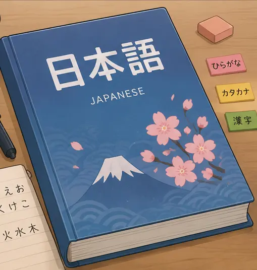
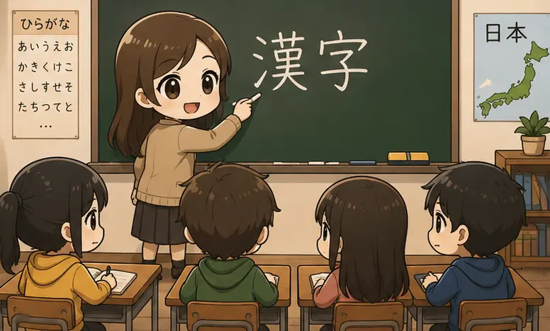
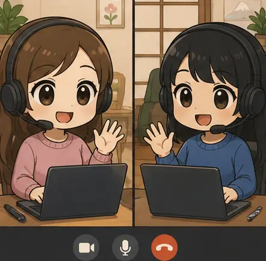
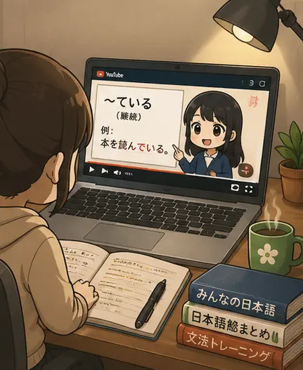

2005
Ich habe beschlossen, neben der Schule Japanisch zu lernen und mir selbst Hiragana, Katakana und erste Kanji beigebracht.

Ich habe beschlossen, neben der Schule Japanisch zu lernen und mir selbst Hiragana, Katakana und erste Kanji beigebracht.

Ich habe einen VHS-Kurs besucht, aber schnell gemerkt, dass das Niveau relativ niedrig und das Lerntempo langsam war. Es war eine gute Erfahrung, aber ich habe nur diesen einen Kurs gemacht.
Ich habe mein Studium begonnen und wegen der hohen Lernbelastung mein Japanischlernen pausiert.

Nach meinem Studienabschluss habe ich einen Job begonnen. Als ich mich im Berufsalltag eingelebt hatte, habe ich wieder mit Japanisch angefangen. Außerdem habe ich eine Tandempartnerin gefunden – sie ist Japanerin und lernt Deutsch.

Ich habe angefangen, Japanisch über YouTube zu lernen. Besonders hilfreich waren Kanäle wie Bite Size Japanese, Learn Japanese with Noriko und der YUYUの日本語Podcast.

Ich habe im Rahmen meines zweiten, diesmal berufsbegleitenden Studiums bei einem Modul als Aufgabe bekommen eine Webseite zu programmieren. Ich habe meine Japan(-isch)-Reise als Thema genommen.